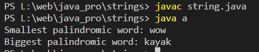

Program to print smallest and biggest possible palindrome word in a given string
Code:-
class a
{
//isPalindrome() checks whether a string is palindrome or not
public static boolean isPalindrome(String a){
boolean flag = true;
//Iterate the string forward and backward and compare one character at a time
//till middle of the string is reached
for(int i = 0; i < a.length()/2; i++){
if(a.charAt(i) != a.charAt(a.length()-i-1)){
flag = false;
break;
}
}
return flag;
}
public static void main(String[] args){
String string = "Wow you own kayak";
String word = "", smallPalin = "", bigPalin="";
String[] words = new String[100];
int temp = 0, count = 0;
//Converts the given string into lowercase
string = string.toLowerCase();
//Add extra space after string to get the last word in the given string
string = string + " ";
for(int i = 0; i < string.length(); i++){
//Split the string into words
if(string.charAt(i) != ' '){
word = word + string.charAt(i);
}
else{
//Add word to array words
words[temp] = word;
//Increment temp
temp++;
//Make word an empty string
word = "";
}
}
//Determine the smallest and biggest palindromes in a given string
for(int i = 0; i< temp; i++){
if(isPalindrome(words[i])){
count++;
//When first palindromic word is found
if(count == 1)
//Initialize smallPalin and bigPalin with first palindromic word
smallPalin = bigPalin = words[i];
//Compare smallPalin and bigPalin with each palindromic words
else{
//If length of smallPalin is greater than next palindromic word
//Store that word in smallPalin
if(smallPalin.length() > words[i].length())
smallPalin = words[i];
//If length of bigPalin is less than next palindromic word
//Store that word in bigPalin
if(bigPalin.length() < words[i].length())
bigPalin = words[i];
}
}
}
if(count == 0)
System.out.println("No palindrome is present in the given string");
else{
System.out.println("Smallest palindromic word: " + smallPalin);
System.out.println("Biggest palindromic word: " + bigPalin);
}
}
}
Output:-
